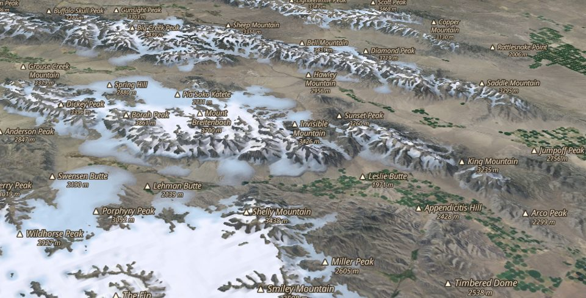

Hayden Veytia
Software engineer · data pipelines, cloud computing & geospatial data
About
Software engineer with a mathematics degree and 6+ years building production data systems: pipelines that ingest, validate and process millions of records a day, the cloud infrastructure that runs them, and the testing and release tooling that keeps them reliable. Comfortable taking a system from design to operation, with Python, Go and TypeScript on AWS.
Now moving toward research software for glaciology and Earth science, where I want to apply these skills to models, satellite data and field observations. A mountaineer and backcountry skier, at home in remote and cold environments. Native English and French, conversational Spanish.
Interests
Maps, GIS & 3D terrain
Geospatial data, terrain models and interactive 3D maps: from PostGIS schemas and track conflation to rendering past landscapes, like the glaciers that covered Idaho and Wyoming 21,000 years ago.
Mountains & the outdoors
Mountaineering and backcountry skiing in the ranges of the American West. Glaciers, how they shaped these valleys, and how they are changing today.
Projects

LGM Glaciers
Computes where glaciers stood at the Last Glacial Maximum, about 21,000 years ago, and shows them in 3D. A shallow-ice flow model with a degree-day mass balance runs on bedrock topography, driven by PMIP4 climate-model output and PRISM 800 m climate, then is checked against mapped moraine extents. Idaho, the Lost River Range and the Wind River Range at 200–500 m resolution.
Spatial Data Conflation Backend
Ingests heterogeneous track and geospatial data (GPX, FIT, GeoJSON, Shapefile), reconciles overlapping records and stores them in PostGIS, with an async worker pool for large ingestion jobs.
Experience
Senior Backend Engineer · Tactacam
Feb 2024 – Sep 2026 Remote- Built and operated the data layer for hundreds of thousands of field-deployed trail cameras: telemetry and images flowing in from devices on intermittent connections, commands and configuration flowing out (AWS IoT Core, MQTT)
- Ran event-driven ingestion pipelines processing millions of events daily (Lambda, SQS, DynamoDB streams, Kinesis), with retries, idempotency, dead-letter handling and failure recovery
- Owned the cloud platform for two products end to end: infrastructure as code (CDK, 50+ resources), monitoring, alerting, on-call and incident response
- Built the testing and release tooling that kept code quality high: fast CI, unit and integration tests, preview environments and staged rollouts
- Integrated machine-learning models (AWS Bedrock) into production image pipelines; mentored junior engineers
Software Engineer · TheFork
Sep 2022 – Jan 2024 Paris, France- Built and maintained APIs across a TypeScript microservices platform serving 20M+ monthly visits, backed by PostgreSQL
- Cut latency 4x by profiling distributed service calls and rewriting slow database queries
Lead Backend Engineer · Chainstarters
Jul 2020 – Aug 2022 Portland, USA- Led backend engineering for the Official app (100K+ users) through its acquisition by Bumble
- Designed PostgreSQL/PostGIS schemas for geospatial proximity search; set up CI/CD that cut manual deploys by 80%
Education
B.A. Mathematics · Reed College
2015 – 2019 Thesis: An Encyclopedia of Infinitely Nested Square RootsStudent Researcher · Lawrence Berkeley National Laboratory
2018 Python tools for DNA sequence analysisSkills
- Languages
- Python, Go, TypeScript, SQL, Bash, Rust (basic), C
- Data & pipelines
- Batch and streaming ingestion, validation, PostgreSQL/PostGIS, DynamoDB, geospatial formats
- Cloud & tooling
- AWS (Lambda, ECS, S3, SQS, IoT Core, CloudWatch), CDK, Terraform, Docker, Git, CI/CD
- Spoken
- English and French (native), Spanish (conversational)